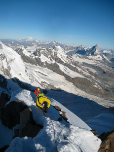
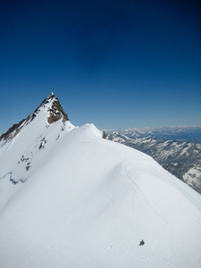
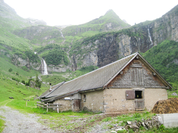
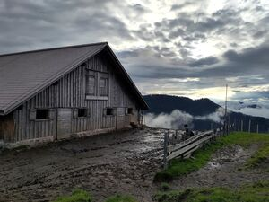
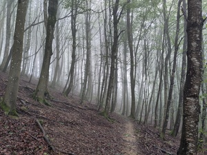
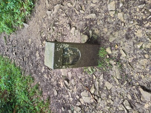
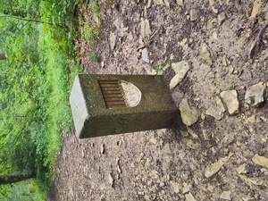
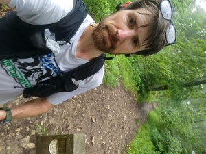

My favorite website
piqued my curiosity about the highest points in each
canton (Federal state) in Switzerland.
The 26 cantons have a wide variety of highpoints,
all in an area one tenth the size of my home state of California.
This includes some serious mountains requiring specific conditions and climbing skills,
but also many easily runnable or bikeable points in the lower regions.
As of August 2023, before officially starting this project, I had already climbed 4 and passed
by a few others. It was fun to look back through my
photos to create the initial post, which I'll update as I climb more.
Joel, Josh, and I climbed to the highest point in Switzerland.
After crossing the glacier to get to the Monte Rosa hut.
Heading up in the morning.

On the ridge, with the Matterhorn in the background.
Snow on the ridge.
Looking back down the ridge from near the summit.
The three of us on the summit.
A thick fixed rope to descend back to the glacier, instead of reversing the ridge. This cost us a lot of time attempting to back up the descent with prussiks. Next time we'd take longer ropes to be able to rappel this.

Josh was confident enough to just downclimb the (overhanging in places) fixed line without other protection, and had to wait a long time for us in the sun.
Cat back at the Monte Rosa hut
2. Schwyz - Bös Fulen
July 8, 2017
Clara, Jeff, Joel, and I climbed this peak, probably because of the fun name! We had hoped to climb Vrenelisgärtli (part of the Glärnisch massif) the next day, but were chased away by lightning!
Limestone on the approach.
Crossing the glacier to the base of the route.
Joel at the top of the glacier, transitioning to the loose ramp.
Clara and Jeff on the ridge, with Glärnisch in the background.
Scrambling the ridge.
The summit.
Clara, me, and Jeff on the summit (Joel taking the photo, I think!)
Clara and me on the summit.
Descending the scree ramp.

We hid in this barn after fleeing the lightning.
3. and 4. Appenzell Innerrhoden and Appenzell Ausserrhoden - Säntis
March 24, 2018 (and some earlier date)
I can't find pictures from the first time I climbed Säntis, hiking up from Schwägalp with Nick, Robb, and Pratyush, so here is a picture from skiing down from near the summit with Yoann. I don't remember if we tagged the summit on that trip, but I remember doing so on the first one.
This was one of the most tiring days I can remember.
This was a quick 15km springtime run/hike over the nice fire roads and forested hiking trails in the Züri Oberland, between the Steg im Tösstal and Bauma train stations.
As is common for the lower-lying cantons, the highpoint is on the border.
The Zürich highpoint is also nearby.
As is also common for highpoints on borders, it's not obvious where the point is.
Two contenders on the border with St. Gallen are commonly listed; I visited both, hiking
over the Hörnli on the way in for some nice views.
View from the Hörnli (1133m).
The first is the Dreiländerstein, at the southernmost point of Thurgau where it meets Zürich and St. Gallen at a triple point.
I didn't find a special stone here, just a trail sign with the elevation (992m),
some stone border markers, and a small restaurant with people eating.
At the Dreiländerstein junction (992m)
The second is a mountain/hill named both "Groot" and "Grat" on
various trail signs along the way ("Grat" means "ridge" in high German
and presumably "Groot", the official name on the Swiss map since 2002, is a version of the same word in a local dialect).
The summit is 996m, but is just inside Sankt Gallen, not on the border. There is a stone
(maybe) marking the highpoint of Thurgau. According to this person on Hikr, this is a mere 991.3m and
the Dreiländerstein point is 992m.
Those are close enough to likely be within the error bounds of such measurements,
but fortunately it's very easy to visit both points.
The summit of Groot (996m)
Thurgau border and highpoint(?) marker near the summit of Groot (991m)
Jordan and I almost climbed the peak as part of the Schwyzer Höhenweg in
fall 2022 (Strava activity) but didn't tag the actual summit, as the trail passes a little way below it.

A muddy farmhouse near the end of a wet day on the Schwyzer Hoehenweg.
Attempts and Flybys
Ticino - Adula / Rheinwaldhorn
In January 2015, Pratyush, Patrick, and I attempted this peak from Dangio, but (as I remember) we ran out of time due to the bus schedule to get back to Lugano, and turned around some way above the Adula Hut.
View up the peak in the morning.
On our way back down, after climbing some way up the snow.
Luzern - Brienzer Rothorn
Clara and I were close to the summit during our Hardergrat hike in July 2017,
but sadly I don't think we actually tagged it!
Sunrise on the Hardergrat / Brienzergrat. I think the Brienzer Rothorn is one of the bumps in the distance.
There is the summit but I don't remember us actually going up there!
Aargau - Geissfluegrat
July 7th, 2024
I actually missed the true highpoint! D'oh!
At a little over 900m, this is one of the lowest high points. In fact (according to trivia from my partner's coworkers) there only two cantons in Switzerland without a ski lift - I guessed this answer by knowing that only Geneva and Basel-Stadt have lower highpoints than Aargau.
I did a nice ~25k running loop from the Aarau train station, to the Wasserflue and then along the ridge to the Geissflue, passing the highpoint on the way. I incorrectly thought it was the nearby trail junction, but the map and wikipedia clearly show that there is a higher point nearby with a plaque, off the trail on the ridge.
The route along the ridge from the Wasserflue to the Geissflue was nice, with parts very reminiscent of the Lägern near Zurich, also geologically part of the Jura. This features steeply angled layers of rock and plenty of roots. Most of the route was quite runnable, though.

Misty trees. This is highly recommended as a route for marginal weather, as it wasn't actually as muddy as I'd thought it'd be, given rain all day before.

Boundary marker (not the highpoint!)from the Aargau side.

Boundary marker (not the highpoint!) from the Solothurn side.

At the boundary marker. I am still 8m too low..
The clouds lifted a bit for a view from the Geissflue proper.


{kind=link}
{kind=link}
{kind=link}
{kind=link}
{kind=link}
{kind=link}
{kind=link}
{kind=link}
{kind=link}
#/media/Datei:Geissfluegrat.jpg){kind=link}
{kind=link}
{kind=link}
{kind=link}
{kind=link}